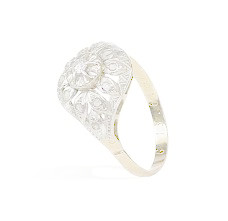

Törtarany felvásárlás
Tört arany felvásárlás a legmagasabb napi árfolyamon, azonnali készpénz fizetéssel.

1077 Budapest, Wesselényi u. 25.
Nyitva tartás: H-P 10-18 óra

Régi kopott ékszerek javítása, kőpótlás, gyűrű sín részének megerősítése, cseréje. Vésés “frissítése”, törött, szakadt részek rendbe hozatala, megerősítése, polírozás, tisztítás rövid határidövel.
1989 óta, immáron több mint 27 éve foglalkozom egyedi arany, ezüst ékszerek készítésével, javításával, restaurálásával Budapesten. Elkészítem egyedi karikagyűrűjét akár hozott kép alapján is. Üzletemben található a műhelyem is a VII. kerulet Wesselényi utcában, így kisebb munkák (kőpótlás, polírozás) akár helyben megvárható, vagy 1-2 munkanapon belül elkészül.
Várom szeretettel üzletemben, jól megközelíthető helyen vagyok, illetve telefonon is szívesen válaszolok a felmerülő kérdésére. Ajánlatkérés gomb alatt pedig bármelyik szolgáltatásom felől tud érdeklődni, árajánlatot kérni.
Fontos számomra az ügyfél elégedettsége, így egy napon belül számíthat válaszomra. Keressen bátran.
Tört arany felvásárlás a legmagasabb napi árfolyamon, azonnali készpénz fizetéssel.

Üzletembe vállalom, hogy elkészítem az ékszerét akár egyedi elképzelés, hozott kép, vagy hozott minta alapján. Az Ön elképzelése alapján fehér, sárga, vörös aranyból, illetve igény esetén ezüstből.
Akár egyszínű fehér/sárga/vörös (rose) aranyból, a kívánt szélesség és profil szerint, de lehetőség van ezek kombinációjából is elkészíteni az Ön által megálmodott karikagyürüt kép, rajz és hozott minta alapján.
Üzletembe vállalom, hogy elkészítem az ékszerét akár egyedi elképzelés, hozott kép, vagy hozott minta alapján. Az Ön elképzelése alapján fehér, sárga, vörös aranyból, illetve igény esetén ezüstből.
Az üzletembe lévő műhelyembe akár azonnali ékszer javítást is tudok vállalni, amennyiben az lehetséges, de ha nem, egy-két nap alatt a sérült ékszer kijavításra kerül, és az üzletembe átvehető.
hagyományos kézi foglalással, garanciával
Elkoszolódott, karcos arany, ezüst, acél ékszerét, óráját, polírozással, ultra hangos tisztítással, aranyozással, ródiumozással akár aznap, vagy egy napos határidővel tudom elvállalni.
Akár új, akár régi ékszerek, egyedi elképzelés szerinti kézi illetve gépi vésése. Régi, kikopott vésések rendbe hozatala, frissítése 2-5 munkanap határidővel. Igény szerint az alapfém színétől eltérő színben is.
1077 Budapest, Wesselényi u. 25.
Nyitva tartás: H-P 10-18 óra